|
.
| Mysteres
de Perfect Dark : |
| Dans
Air Force One, il y a des Endroits avec des Passages Secrets, impossibles
à utiliser, à part celui sur la 5ème Photo ci-dessous
si vous utilisez le Code Passe-Muraille. Bizarre, pleins de Conduits,
mais pas d’utilisation ! |
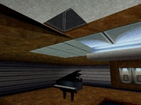
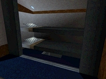
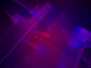
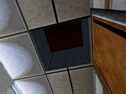
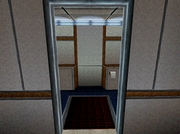
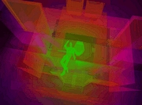
| Explosions
Bizarres |
Entrez
dans le Niveau en Special ou Perfect Agent et dirigez-vous vers l'Escalier
menant à la Chambre du Président. Une fois en haut, sortez
n'importe quelle Arme explosive et shootez le mur comme sur la Photo.
Bizarrement, une Grosse Explosion va apparaître ! |
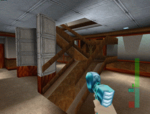
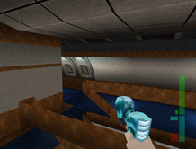
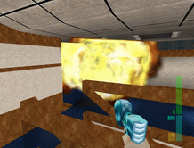
| Ordinateurs
Cachés - Explosions dans le Conduit OVNI
|
Allez
devant l'Ombilical. Maintenant, avec le Farsight XR-20 ou le Scanner
à Rayons X, regardez devant vous. Qu'est-ce qu'on aperçoit ?
Des Ordinateurs !!
Pourquoi sont-ils là ? Explication ci-dessous après les Photos
! |
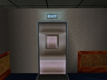
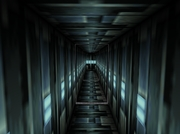
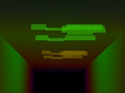

Et
bien lorsque la Mine explose, elle crée UNE explosion.
Pour donner l'Illusion que le Conduit pète,
les Ordinateurs explosent,
mais comme vous ne les voyez pas, vous avez l'impression que c'est
le CONDUIT qui explose. Alors qu'en fait ce sont les Ordinateurs.
Comptez-les, puis comptez les Explosions : Le Compte est bon. |